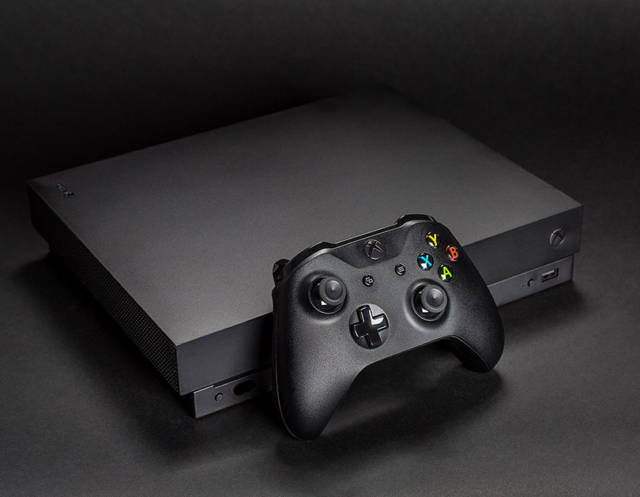

XBOX ONE X REVIEW

The first time I powered up the Xbox One X, I genuinely thought my house was falling down. Microsoft’s boot-up animation is bright, loud, and full of surround sound bass, perfectly epitomizing the bombastic nature of the company’s “true 4K” gaming message. Microsoft’s Xbox One X is the world’s most powerful console, and the company is beating its chest about its 4K capabilities.
Microsoft has a lot of reasons it needs to be this bold. Sony is winning this console war, backed by massive exclusive titles like The Last of Us, Uncharted 4, and Horizon Zero Dawn. The original Xbox One had a hard time competing with Sony’s PlayStation 4, thanks initially to lower specifications and a bundled Kinect that led to a $100 price gap. Microsoft is answering those old complaints with the new Xbox One X. It’s a smaller, sleeker, faster console than the original, and it’s easily more capable than the PS4 or PS4 Pro (Sony’s 4K console) in terms of raw power.
While the power inside is unquestionable, Microsoft’s focus on hardware specs isn’t matched with launch titles that really show off 4K gaming. Forza Motorsport 7 debuted last month, so the Xbox One X isn’t launching with any exclusive AAA games. At $499, you’re really paying for the pure hardware here, and you’ll need a 4K TV to get the best benefits. If you’re an original Xbox One owner, you’re going to be really pleased with the improvements. For everyone else, it’s going to depend on what games you play. Hardware only goes so far.
THE HARDWARE
Let’s start with the basics. I’m really impressed and surprised at how much power Microsoft has managed to squeeze into the Xbox One X’s small case. While the original Xbox One was a big, black box about the size of an old-school VCR, the Xbox One X matches the impressive design of the Xbox One S. It’s actually smaller than the S in terms of volume, but I did notice if you stack them, then the X is larger in some dimensions. Either way, it’s small enough to fit in a backpack, but it’s rather dense so it feels heavier than the One S.
THE XBOX ONE X DESIGN IS VERY SIMILAR TO THE S
The Xbox One X has the same inputs and ports as the S. There’s HDMI-in if you want to connect up a TV set-top box, two USBs at the rear and one at the front, and an Ethernet port. Microsoft ditched the external power supply from the original Xbox One, and it’s all integrated in and dual voltage. All in all, it’s very similar to the Xbox One S from the outside and still needs a USB adaptor for the Kinect.
The real power can be found inside. Microsoft is using a 2.3GHz 8-core AMD Jaguar processor, 12GB of RAM, and a six-teraflop AMD Radeon GPU. That’s nearly two teraflops more than the PS4 Pro, a faster CPU, and 3GB more of overall RAM. The Xbox One X comfortably outperforms the PS4 Pro. On hardware alone, it’s smaller, more powerful, and even includes a 4K Blu-ray player over its PS4 Pro rival.
All of that power means you need a good cooling system and fans to match. During my own testing, I haven’t noticed any huge issues here. The fans are noticeable (like a gaming PC) at times when you’re not even pushing the console, and they’re definitely louder than the Xbox One S. The back of the One X unit does get rather hot, and I’d recommend not keeping this locked away in a cupboard. I never had issues with it stacked inside an open shelving unit, though.
4K GAMING
The real promise of the Xbox One X is “true 4K” gaming. Most games made for the Xbox One are designed for 1080p TVs, which have a quarter of the pixels found on a new 4K TV. The Xbox One X is more than four times faster than the original Xbox One, so it’s capable of 4K gaming. While it’s not as powerful as the latest gaming PCs, the benefits are really going to depend on what game you’re playing. Microsoft is promising more than 150 “enhanced” games for the Xbox One X, but that doesn’t always mean they will be 4K. Some enhancements could include better frame rates instead of 4K resolution, or HDR capability. Other enhancements might include 4K, HDR, and better frame rates. It’s up to game developers to decide, and there’s not a clear pattern yet.
I enjoy PC games for the smooth frame rates, and I find it nauseating jumping back to the same game running at 30fps on a console. I spent some time playing Gears of War 4 with its new up-to-60fps “performance mode.” Although it’s an old game at this point, it’s a good example of how the Xbox One X can have 4K modes or performance-focused modes. The 4K mode, coupled with HDR, looks great, but the performance mode running at 60fps feels even better without the 4K resolution boost. Rise of the Tomb Raider also has similar options, and it’s a balance that game developers should really offer gamers.
I’ve not had enough time to test all of the enhancements to the Xbox One X games, simply because they haven’t gone live at the time of this review. That said, the ones I’ve experienced haven’t blown me away enough to warrant the upgrade over my Xbox One S. I switched back to the One S, and I did notice that certain games weren’t as smooth and certainly didn’t look as good, but I soon adjusted.
Likewise, when I returned to the Xbox One X it felt a lot like my Xbox One S. The jump from 1080p to 4K isn’t as profound as SD to HD, and I found it hard to always notice the difference at the distance from my TV. Maybe that will change once more enhanced games are available, but I don’t think most people will be able to notice a big difference just yet. Games will need to be tweaked and fully optimized for the Xbox One X hardware, and you already get the benefits of HDR on the Xbox One S.
That said, the X does offer the best graphics currently possible on a console. If you don’t care about Sony’s exclusives then the Xbox One X will be the best console to play all the cross-platform games coming out. If you already have a large stack of Xbox One games and you’re using the original console, this is going to be a nice upgrade if you own a 4K TV.
For anyone else, this probably isn’t the console for you. Sony really has some impressive exclusives on the way, and it’s hard for Microsoft to counter this despite its great job on the hardware. Microsoft promised the best hardware, and it delivered — but that’s nothing without games.
Link to the original text THE VERGE
Categories
- #xbox
- #console
- #theverge
- #gaming
TRENDS: